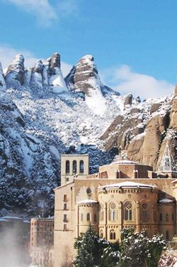
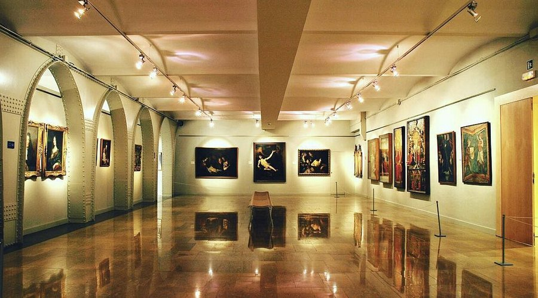
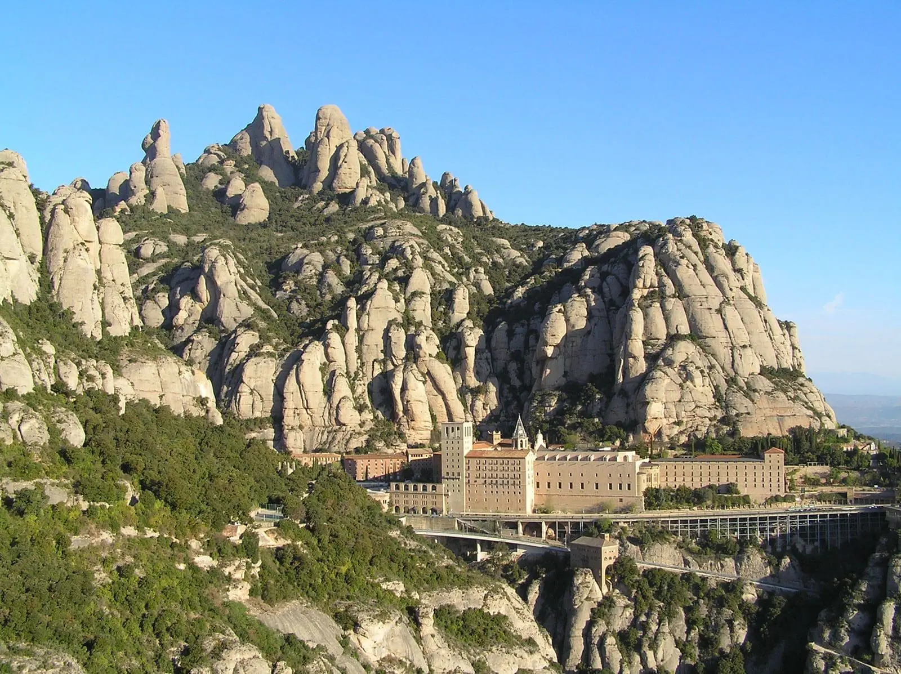

Monasterio de Montserrat
Un monasterio histórico situado en la montaña y uno de los lugares más visitados de Cataluña.
Destino único en Cataluña
Descubre uno de los paisajes más impresionantes de Cataluña.
Descubrir másMontserrat es una montaña situada cerca de Barcelona, conocida por sus formaciones rocosas únicas y por el famoso monasterio de Montserrat. Es un destino muy popular para excursiones, senderismo y turismo.
Un monasterio histórico situado en la montaña y uno de los lugares más visitados de Cataluña.
Desde la montaña se pueden ver paisajes espectaculares y disfrutar de vistas panorámicas.
Montserrat ofrece diferentes rutas para caminar y descubrir la naturaleza.
Montserrat se puede visitar desde Barcelona en coche o en transporte público. Una opción popular es tomar el tren y luego subir con el cremallera o el funicular.


